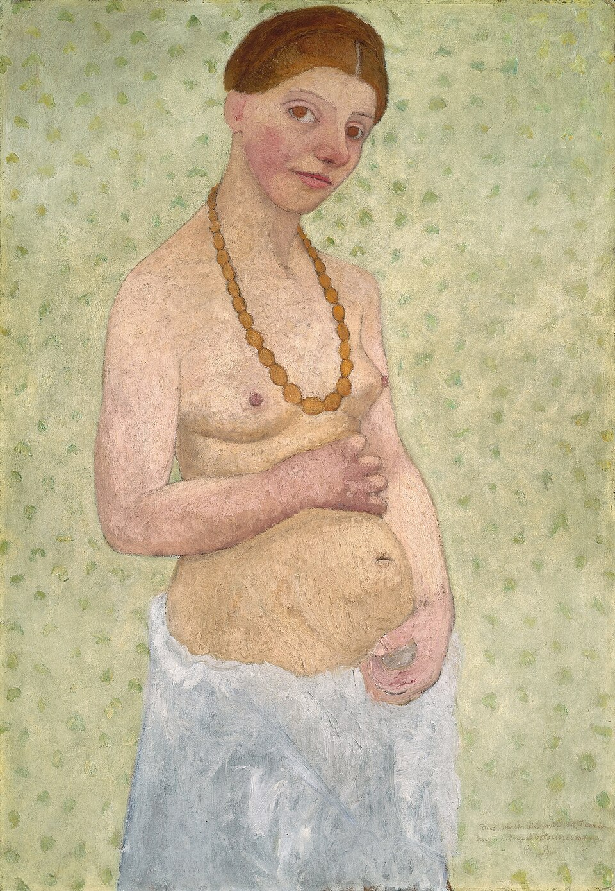
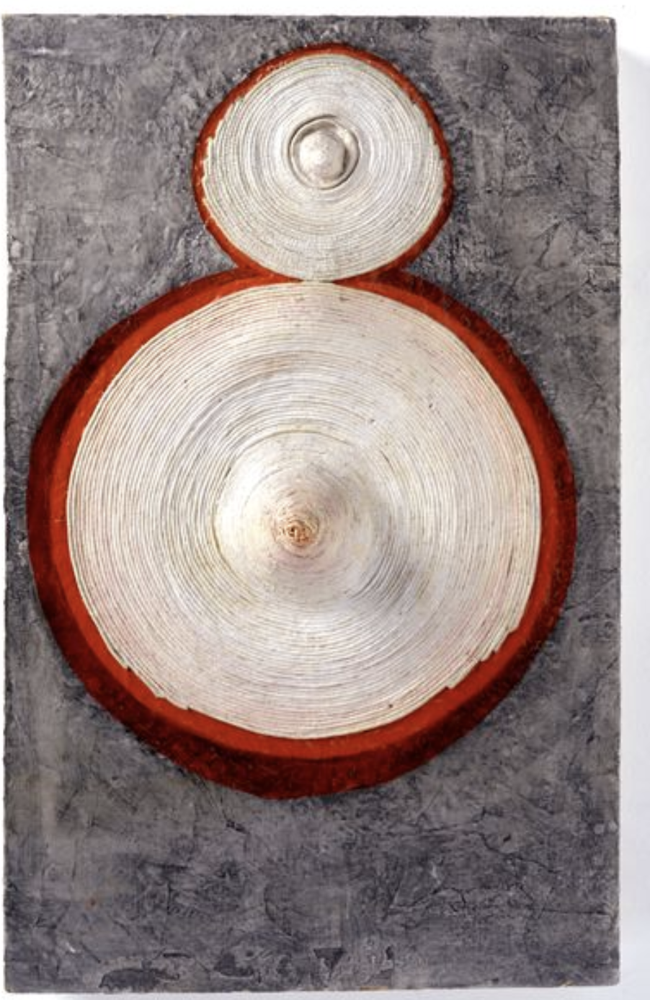
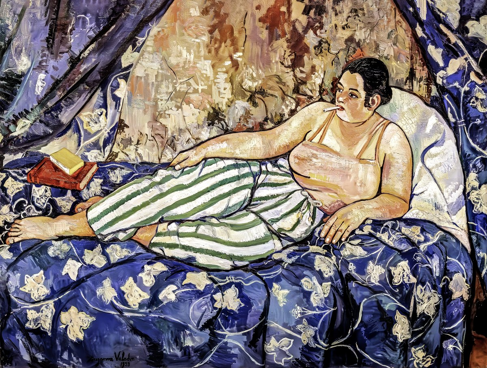
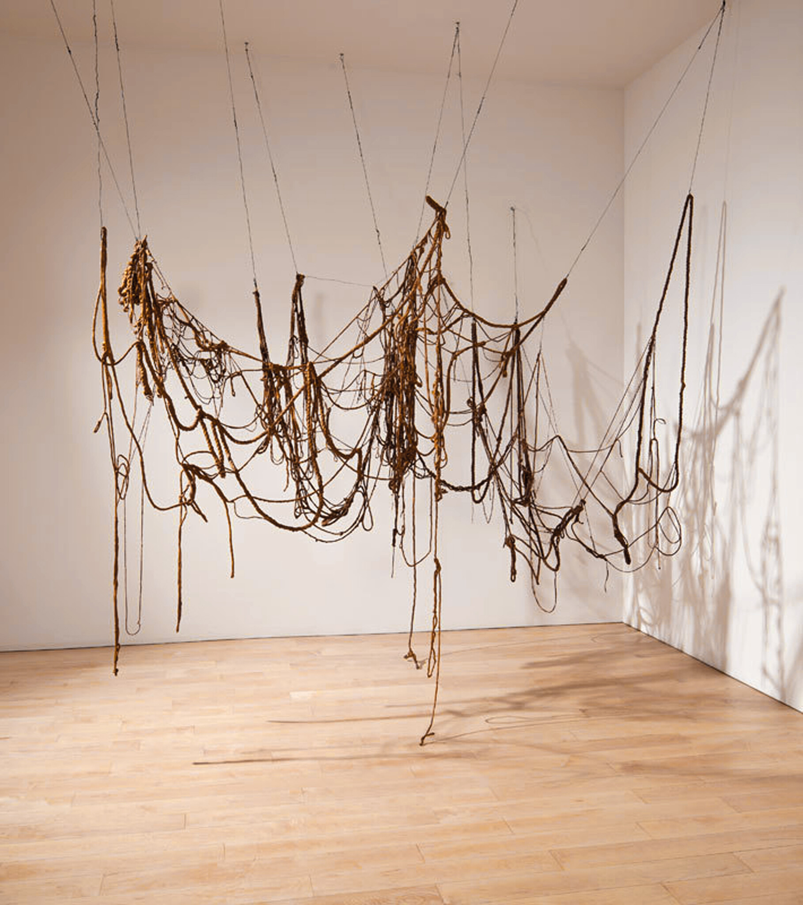

一线 By a Thread
两位德国出身的女性，都让“身体”成为各自时代里最激进的突破口， 都在创作攀至顶峰时天才早逝。一条线把她们系在一起—— 它输送生命，也能勒断生命；而战争，是那把剪刀。
配对论点的天赐礼物——构图几乎是镜像的
Becker《结婚六周年自画像》那对乳房 + 孕腹的双圆形， 与 Hesse《Ring Around Arosie》上下叠置的双圆乳状体， 几乎在隔着五十九年互相凝视；连暖色调——琥珀／赭红 对肤色／铁锈——都彼此呼应。视觉孪生在这里是自明的。


她们，是从一整片星海里被筛出的
这两位女性并非孤例。下面每一个微点，都是馆藏数据库里的一位艺术家， 按出生年排布在时间的横轴上。绝大多数是男性——淡若尘埃； 女性寥寥，是其中罕见的亮点。我们追随的三个名字， 正是从这片不平等的星海中被打捞出来的。
两条命线，同一个剪刀
一个被肉身放逐，一个被作品放逐。Becker 在产后第二十天倒下； Hesse 三十四岁死于脑瘤。她出生的祖国所酝酿的灾难， 把还是孩童的她逐出国门；而早一代的先驱虽未亲历， 却在身后被同一场灾难抹去。点击线上的节点，放大每一个交汇处。
主题孪生，视觉反转
把两人的代表作交给同一套机器之眼——主导色、亮度、边缘与角点。 结论出人意料：构图与母题上她们是双胞胎，视觉气质上却互为镜像。 Becker 一侧温暖、饱和、绘画性；Hesse 一侧冷峻、明亮、结构繁复。 二十世纪的灾难，仿佛把身体里的暖色一点点抽干。
一边暖，一边亮
在这张罗盘上，Becker（琥珀）的弧几乎占满“暖色／饱和／色彩丰富”的一端，
Hesse（铁锈）则伸向“明度／边缘／角点”的另一端——一组近乎完美的互补。
注 · 仅 18 张代表作的均值；此处的“完美互补”部分源于两点归一化的几何必然，
真正可信的是原始数值差（暖色占比 0.49 ↔ 0.23）。
即便进了同一座现代美术馆，两人被归入的“位置”也截然不同—— Becker 仅以寥寥几张版画侧身其间（她的油画杰作并不在此）； Hesse 则以素描与雕塑进场。馆藏的策展归类，本身就是一种命运。
孕育与断裂，本就是同一根线的两端。
更早的一束光：苏珊娜·瓦拉东
在两位主线之前，另一位女性早已把“凝视”翻转过来。 Suzanne Valadon（1865–1938，法）洗衣女出身、做过马戏杂技、 当过雷诺阿与劳特累克的模特——从“被看”的身体， 长成“来看”的眼睛，是首位入选法国国家美术协会的女性。 她以浓烈的色彩与硬朗的轮廓画下不被美化的裸体， 正是 Becker 与 Hesse 之前，同一根线更早的一段。


那条缠绕的绳，正是从腹部生长出来、连着母与子的线。
它把一个女人系向她的孩子，也把她系进她的时代。 Hesse 最后的作品几乎只剩下线——下垂、缠绕、随气流颤动， 像无数条脐带同时被悬挂、被等待剪断。
而这根线还在延伸。每接纳一位新的女性， 都是同一根线上又一个被悬起的生命、又一个被系上的结—— 叙事随线生长，而名字纹丝不动。
《一线》 By a Thread · Modersohn-Becker ↔ Hesse ·
a data visualisation on bodies, war, and the umbilical line
作者 · Author Ganze Chen
本作品仅作非商业的学术 / 教育用途。图像：Paula Modersohn-Becker、Suzanne Valadon
作品属公有领域（via Wikimedia Commons）；Eva Hesse 作品 © The Estate of Eva Hesse，
在此依合理使用原则引用。视觉特征经 OpenCV 自提。
数据来源 Data ·
MoMA Collection (Kaggle) ·
Famous Paintings (Kaggle) ·
art_auction_valuation（参考指标维度）
For educational, non-commercial use only · © respective rights holders.